Иконка приложения ждёт утверждения
Консилиум 24.09: 79 иконок конкурентов из реальной выдачи App Store → 8 направлений → 5 доработок → Jev (19 персон из 7 когорт + 6 дизайнеров, 375 оценок) и второе мнение Codex по картинкам. Победитель — «Терракотовая Библия»: два воробья на открытой Библии, линь на терракоте.
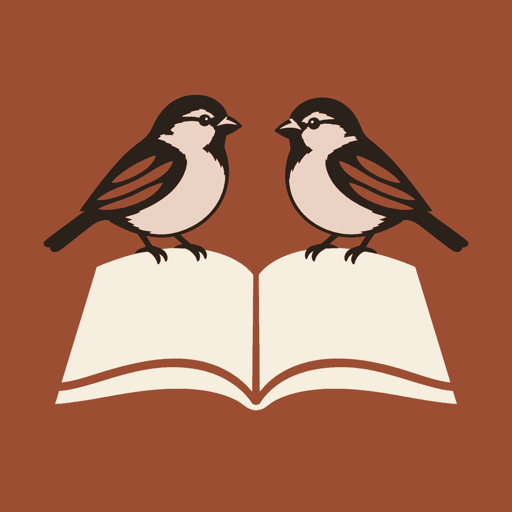
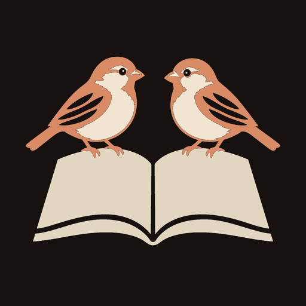
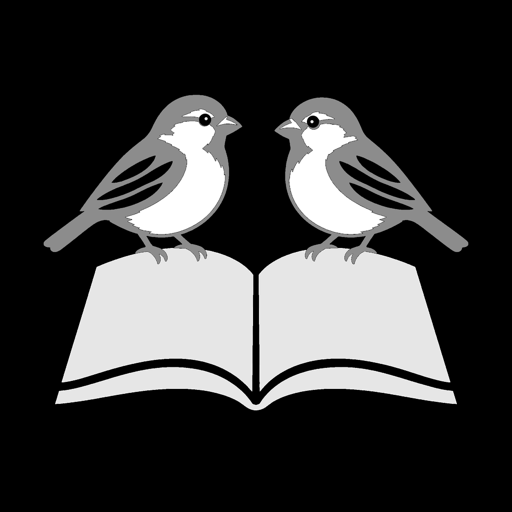
Почему она итог 7.38
- Сразу видно, что это Библия. 89% персон читают её как христианское приложение. У иконок «просто птицы» (B, B2, A) — 22–33%: без книги или креста человек из поиска не понимает, что это такое.
- Выделяется в выдаче. В топ-10 по «bible verse widget» у 9 из 10 крест или Библия, а воробьёв нет ни у кого. Сплошная терракотовая плашка — единственная тёплая среди белых, голубых и красных. «Тапнут» 62% — лучше всех вариантов во всех 7 когортах.
- Сами воробьи и есть бренд. Название и стих Матфея 10:29–31 видны на иконке; крест тут не нужен (вариант с крупным крестом набрал 3.98: «ещё одна иконка с крестом», похоже на чужое у 80%).
- Держится в 60 и 29 px: тёмные птицы, светлая книга, тёплый фон — три больших пятна. Дизайнеры: 7.86 из 10, «читается мелко» 74%.
- По дизайн-системе: только токены Linen Heritage (#9C4E33, #F6EEDF, #2B211B, #EAD3C4), без градиентов и золота. Тёмная версия — палитра Candle.
- Codex согласен («BD should ship»); его правки внесены: книга уже, три крупных пера на крыло, чистые лапки, одинаковые головы.
- BD «Терракотовая Библия» как иконку 1.0 (рекомендую) — уже стоит в сборке: светлая, тёмная и тонированная.
- Или другую из раунда 2: CD (ночная, 6.14) / D (на льне, 6.44).
- Перед релизом: перерисовать победителя в векторе (Figma/Illustrator) по этому эскизу — сейчас это растр от Codex, приведённый к точным цветам.
APPROVALS.md или в чат.В контексте
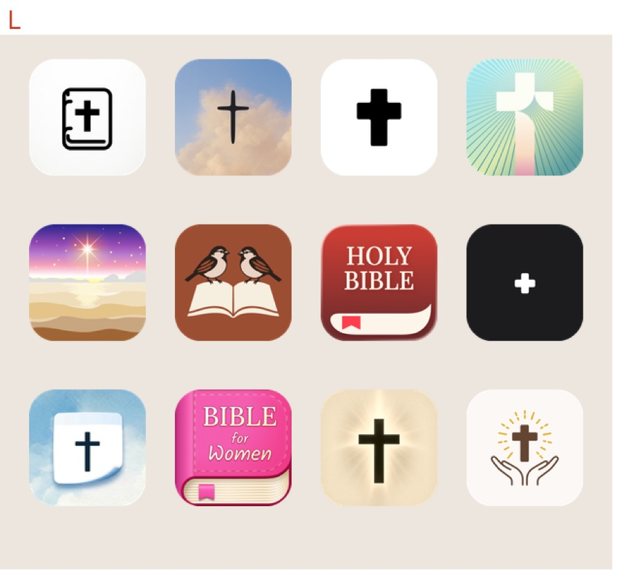
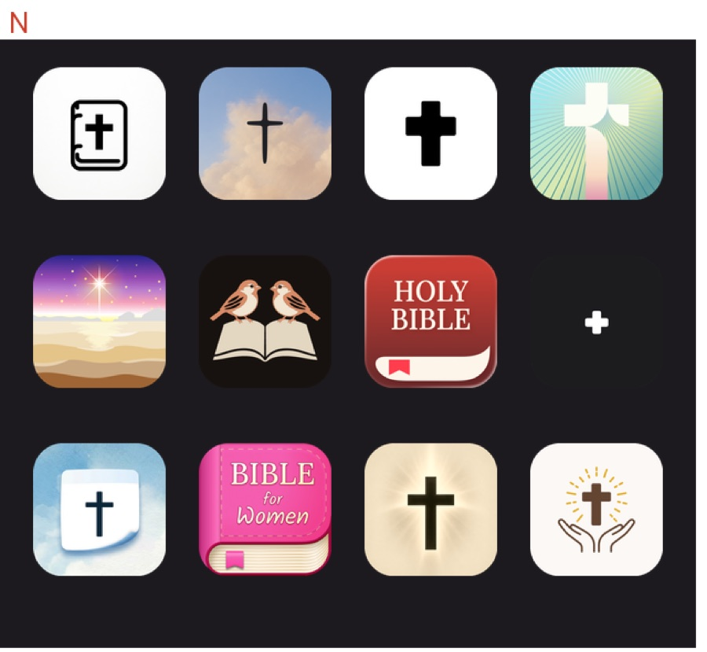
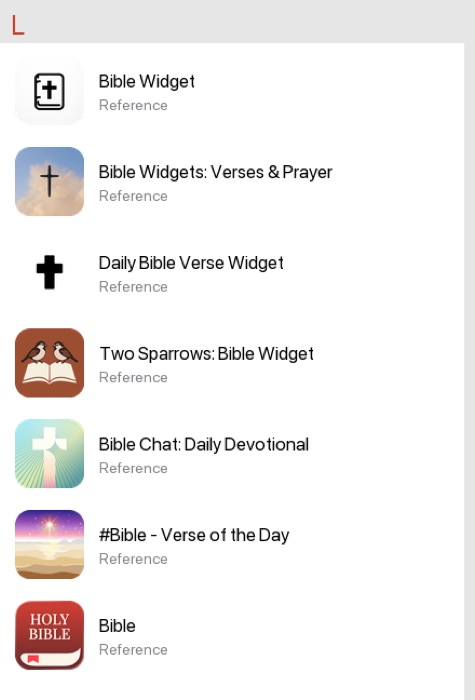
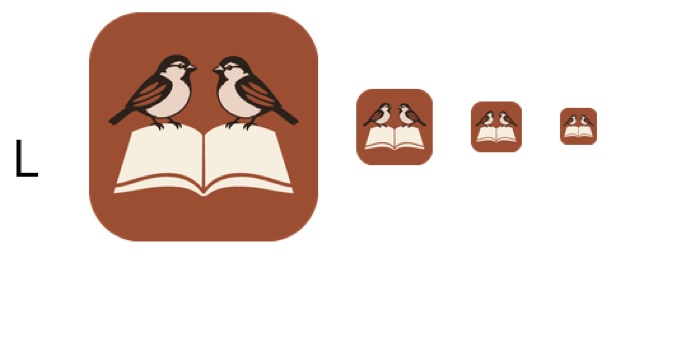
Что делают конкуренты
Выдача App Store (US) по 6 запросам: bible verse widget, daily bible verse, bible verses for anxiety, bible widget, prayer widget, bible — 79 христианских приложений (мусульманские приложения для молитв убраны). Самые частые цвета — коричневый/золото (22: кожаные Библии, светящиеся кресты на кремовом), нейтральные (20) и синие (17). Вывод: тёплый цвет сам по себе нас не выделит — выделяет силуэт двух воробьёв; а книга даёт «это Библия» без ещё одного креста.
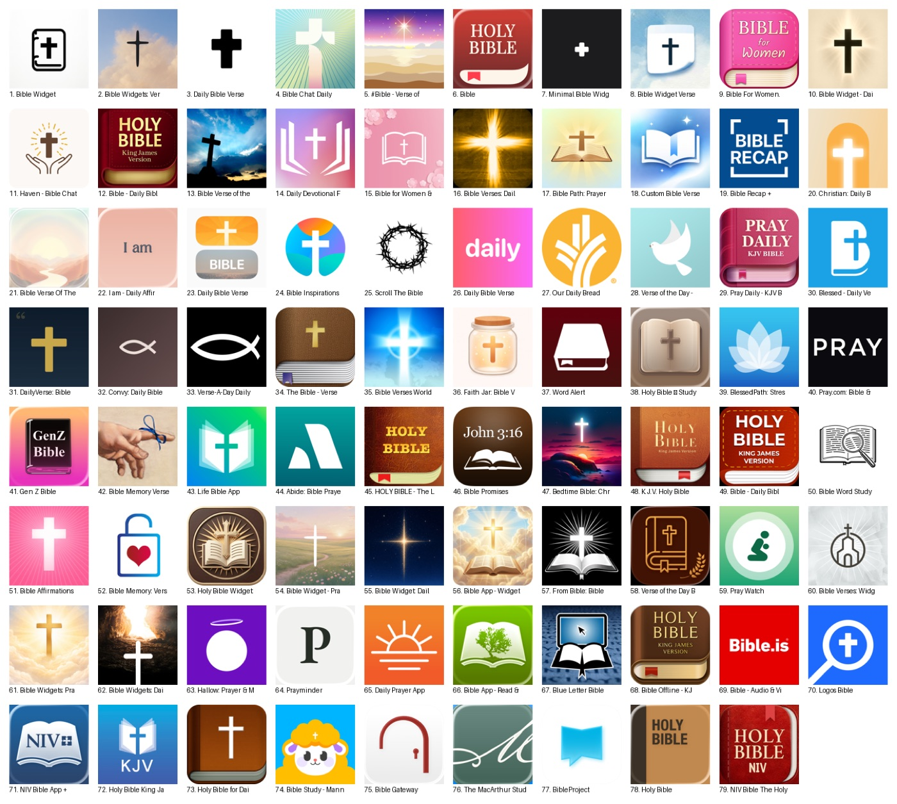
Раунд 1 · 8 направлений
Все — в палитре Linen Heritage, стиль «гравюра печатной Библии», без текста. Нарисованы Codex (image generation), проверены на 180/60/40/29 px, в выдаче и на Home Screen.
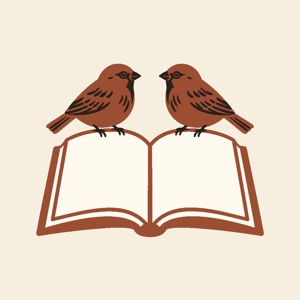
D · Воробьи на открытой Библии · 6.43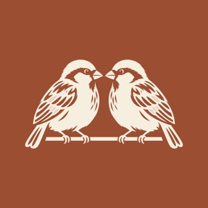
B · Светлые воробьи на терракоте · 6.16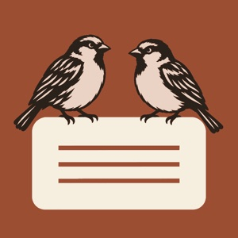
G · Воробьи на виджете · 5.57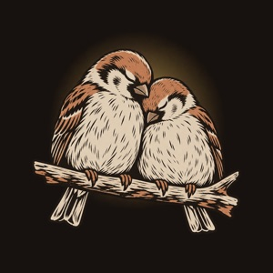
C · Ночь, свеча · 5.24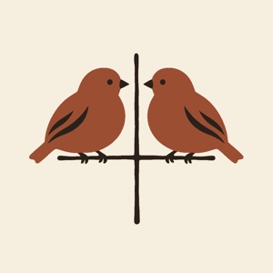
F · Воробьи на тонком кресте · 5.10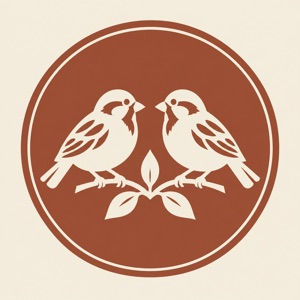
H · Медальон-экслибрис · 4.21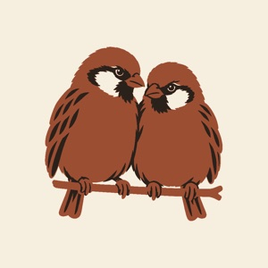
A · Пара гравюрой на льне · 4.05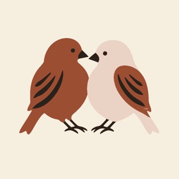
E · Птицы-сердце · 2.61| Вариант | итог | нравится | тапнут в выдаче | видно, что Библия | дизайнеры | читается в 60 px | похоже на чужое |
|---|---|---|---|---|---|---|---|
| D · Воробьи на открытой Библии | 6.43 | 7.33 | 0.53 | 0.84 | 6.42 | 0.70 | 0.45 |
| B · Светлые воробьи на терракоте | 6.16 | 7.11 | 0.52 | 0.33 | 5.82 | 0.67 | 0.26 |
| G · Воробьи на виджете | 5.57 | 6.29 | 0.49 | 0.31 | 5.24 | 0.72 | 0.38 |
| C · Ночь, свеча | 5.24 | 6.83 | 0.54 | 0.39 | 3.00 | 0.15 | 0.28 |
| F · Воробьи на тонком кресте | 5.10 | 6.35 | 0.49 | 0.40 | 3.57 | 0.27 | 0.42 |
| H · Медальон-экслибрис | 4.21 | 5.30 | 0.45 | 0.30 | 2.44 | 0.18 | 0.30 |
| A · Пара гравюрой на льне | 4.05 | 5.56 | 0.39 | 0.22 | 2.15 | 0.23 | 0.26 |
| E · Птицы-сердце | 2.61 | 2.54 | 0.41 | 0.19 | 1.20 | 0.39 | 0.31 |
Что поняли: «просто птицы» нравятся, но их не узнают как Библию (B — 0.33, A — 0.22); книга даёт 0.84. Ночная C красивая, но мелкая штриховка превращается в кашу (дизайнеры 3.0). E и C — «влюблённые птички»: риск «приложение для пар». F — тонкий крест исчезает в 60 px. Codex поставил B первой, D третьей и предложил свою идею — два воробья смотрят в одну сторону.
Раунд 2 · доработка лучших
Совместили сильное: книгу из D (узнаётся как Библия) и сплошную терракоту из B (видно в выдаче). Плюс ночная версия, вариант с крупным крестом и идея Codex. D и B из раунда 1 — как контроль: в новом прогоне они получили почти те же баллы (6.43→6.44, 6.16→6.15), значит, оценки Jev стабильны.
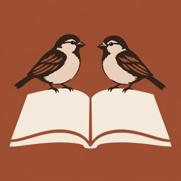
BD · Терракотовая Библия · 7.38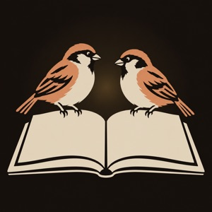
CD · Библия при свече (ночь) · 6.14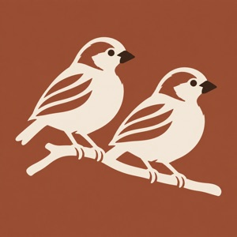
B2 · Два воробья смотрят в одну сторону (идея Codex) · 5.68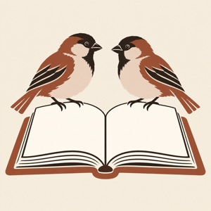
D2 · Библия на льне, птицы крупнее · 4.53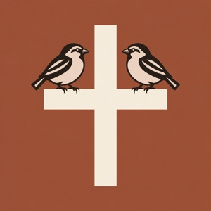
FX · Воробьи на крупном кресте · 3.98| Вариант | итог | нравится | тапнут в выдаче | видно, что Библия | дизайнеры | читается в 60 px | похоже на чужое |
|---|---|---|---|---|---|---|---|
| BD · Терракотовая Библия | 7.38 | 7.87 | 0.62 | 0.89 | 7.86 | 0.74 | 0.42 |
| D · Воробьи на открытой Библии | 6.44 | 7.29 | 0.52 | 0.84 | 6.55 | 0.71 | 0.45 |
| B · Светлые воробьи на терракоте | 6.15 | 7.08 | 0.52 | 0.33 | 5.86 | 0.68 | 0.27 |
| CD · Библия при свече (ночь) | 6.14 | 7.45 | 0.53 | 0.87 | 5.24 | 0.56 | 0.54 |
| B2 · Два воробья смотрят в одну сторону (идея Codex) | 5.68 | 6.70 | 0.48 | 0.32 | 5.18 | 0.56 | 0.26 |
| D2 · Библия на льне, птицы крупнее | 4.53 | 5.58 | 0.43 | 0.83 | 3.34 | 0.48 | 0.68 |
| FX · Воробьи на крупном кресте | 3.98 | 4.60 | 0.45 | 0.93 | 2.62 | 0.62 | 0.80 |
Победитель по когортам
| Когорта | нравится (0–10) | тапнут BD | лучший из остальных | видно, что Библия |
|---|---|---|---|---|
| Эстетика 18–34 | 7.6 | 0.65 | 0.57 | 0.89 |
| Женщины 35–55 | 8.4 | 0.65 | 0.56 | 0.90 |
| Strugglers | 8.4 | 0.69 | 0.58 | 0.88 |
| Католики | 7.6 | 0.54 | 0.49 | 0.88 |
| Пуристы/KJV | 7.4 | 0.50 | 0.46 | 0.89 |
| Подростки | 6.5 | 0.53 | 0.46 | 0.88 |
| Испаноязычные | 7.7 | 0.57 | 0.47 | 0.89 |
Как считали
- Итог = 0.40 × «нравится» (0–10) + 0.30 × 10 × «тапнут в выдаче» + 0.30 × оценка дизайнеров. Правило отрыва 0.70: BD опередила D на 0.94 — переигровка не нужна.
- Jev (TypeSafe System One, jev-latest) видит только текст. Каждую иконку мы описали по готовой картинке и рендерам в 60/29 px и в выдаче — описания лежат в
candidates_r1.json/candidates_r2.json. Это слабое место метода: формулировки влияют на оценку; поэтому картинки отдельно смотрел Codex. - Персоны: 19 человек из 7 когорт с весами (эстетика 30%, женщины 35–55 22%, strugglers 20%, католики 10%, пуристы 8%, подростки 5%, испаноязычные 5%). Дизайнеры: иконки для топ-100, христианские издательства, wellness, виджет-паки, ASO/A-B тесты иконок, доступность.
- Все файлы:
research/icon-2026-09-24/(run.py, sim.py, finalize.py, ответы Codex). Цвета приведены к токенам скриптом, тёмная и тонированная версии выведены из той же картинки.